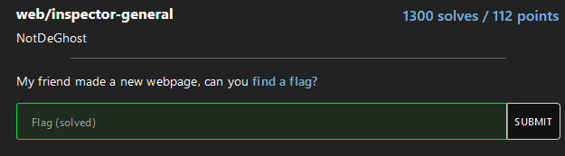
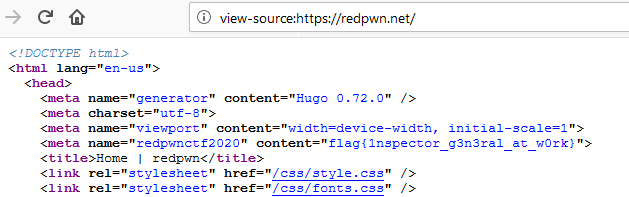
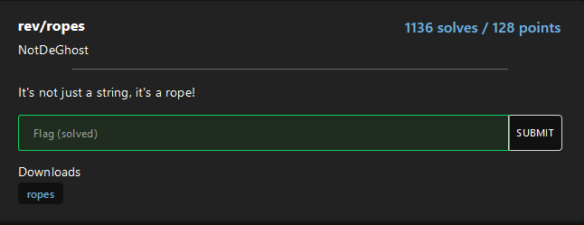
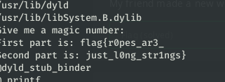
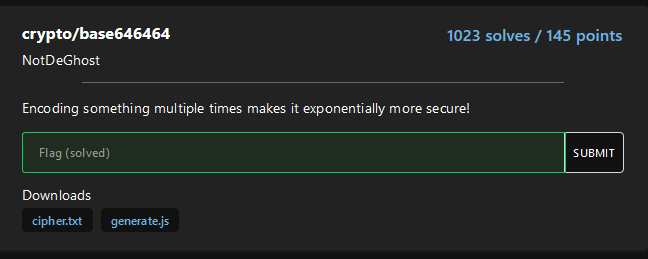
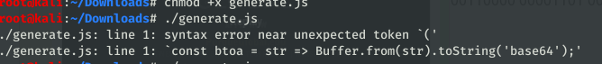
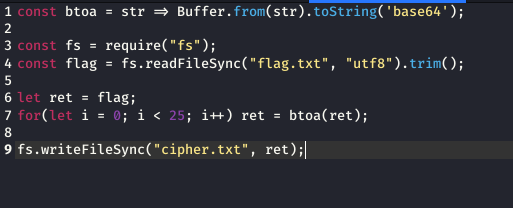
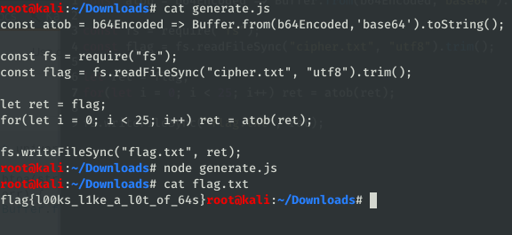
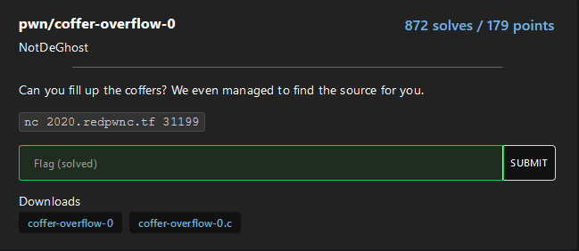
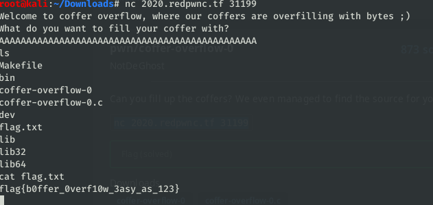

I still consider myself to be a beginner at CTFs although I've done a few challenges. I love that feeling when you solve a puzzle and feel like you actually can apply what you've been learning in other places. I don't know the history of RedPWN, but I played with the CTF_Circle team. The event had 59 questions and my team manged to get 9 solved in the first day or so and didn't have time to return. These were the problems I was able to solve and they were pretty first ones in each category.

For the Web inspector-general question, "inspector" was a clue for me. I clicked on the link which took me to the page. Generally when I start any web challenge, I take a look at page source by right clicking and selecting that choice. Inspect Element is another choice on the right-click menu so I could have looked at that as well. So once the source page came up, I typed CTRL+F and searched for "flag".


This was another beginner level problem, IMO. The clue is the word "string". Strings is a command in most Linux distros that finds and prints text strings in binary files. I downloaded the file and ran strings {filename} and as I scrolled down, the rope made sense because it was two lines in that made up the flag as you can see below after scrolling through the output of the strings command.

Copy and paste the first and second pieces of the flag in a line and submit.

Right away from the title, I knew this problem as a base64 related. And the additional clue "base646464" told me that it had been encoded multiple times. I didn't even open the javascript file. I did this one the hard way using cut and paste on https://www.asciitohex.com/. I lost track of how many times I had to decode (turns out 25 after examining the code), but eventually the answer was revealed. Each time I'd paste the base64 text, copy the coversion from the ascii text and After the challenge I decide to go back and look at the code and try to learn how to do it the smarter way.
I downloaded the file and chmod the javascript file so I could run it. I ended up with an error and thought that meant I needed to edit something in the code. Turns out that's just not how you run javascript in the terminal.

After googling a bit and trying to understand what the code was doing, I realized this was the code that was used to encoded the message in the the cipher.txt file. Right there in the code I could see that the for loop was 25 which meant that the flag that I needed had been encoded 25 times. It meant that my code would also need to decode 25 times.

As I said earlier that the weird error I was getting had to do with not running .js files properly in the terminal. After googling and combing through some similar problems, I learned that I needed to install NodeJS from the repo on kali in order to run the file. {install nodejs –y} accomplished that task. After that I changed the code to encode 2 times and ran the javascript with a simple message that I encoded on the asciitotext website. I then ran the file and saw that my suspeciious were correct about the file. Then I had to figure out how to write a script to reverse the encoding.
At first I tried to just change the btoa() to atob(), however I had to define the function. While btoa encodes ascii into base64, atob stands for ascii to binary and decodes base64 string into ascii text. While the browser can intepret the functions, I had to define it for running in the terminal. There are people that could explain the whys far better, but as I understood, I needed use Buffer.from(b64Encoded, 'base64').toString('utf8') just like the reverse was used in the given code. I didn't even use the 'utf8' in the toString function and it still worked. I was happy to figure out that much. I ran the encoded string used a for loop that went up to 2 just like my test case and when that worked, I changed the value to 25 and ran the string from the cipher.txt file and it worked. Yay me.


This was a classic buffer overflow problem. Why do I know this, because the category was pwn and the name clue was "overflow". Looking at the source code, I coudl see that the string expected a size 16, and I knew that to get the program to crash, I needed to giving it more than 16. But I didn't know exactly how much more so I pretty much doubled the characters I entered. The most common method I see used and what I was thought was to put in a bunch of A's. I didn't use a debugger in this case since I just wanted to see what would happen. Used the downloaded compiled file, I ran it and crammed the buffer with A's. Well first I typed in less than 16 and the program simply exited when it completed. Then after I overflowed it, I got a blank line, but not a complete exit. I test the list file 'ls' command and it showed me the files in my directory so I figured I was on the right track. I then went to the game server using the provided link and repeated my steps. When it crashed I typed “ls” again and saw a flag.txt file listed. Yes. I was in. To view the contents of the flag, I used the cat command on flag.txt file for the answer.

I attempted a couple of other problems, but never did manage to solve.
Hopefully this walkthrough would help someone. Please be nice, it’s my first one, but hopefully not my last.